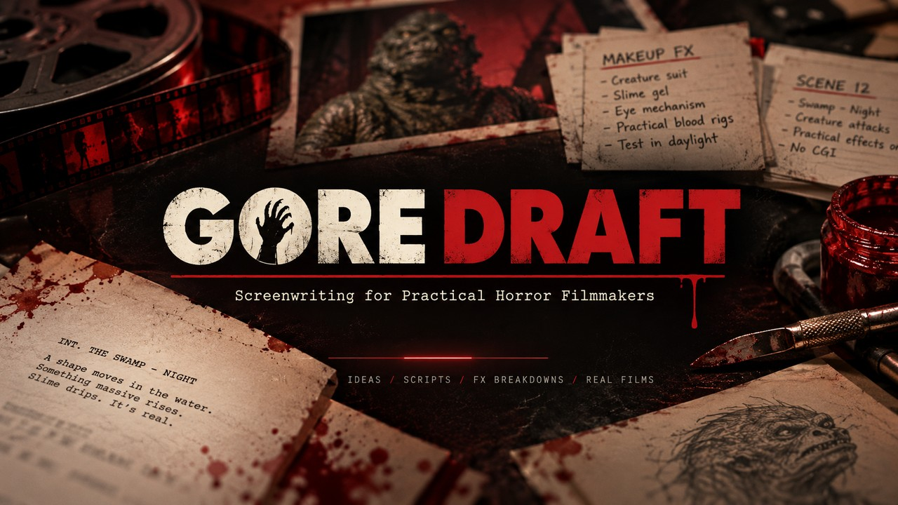
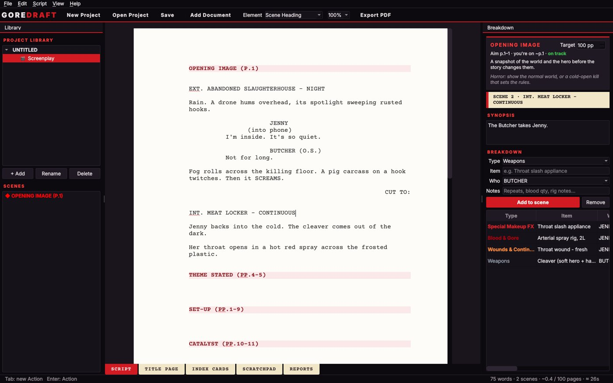
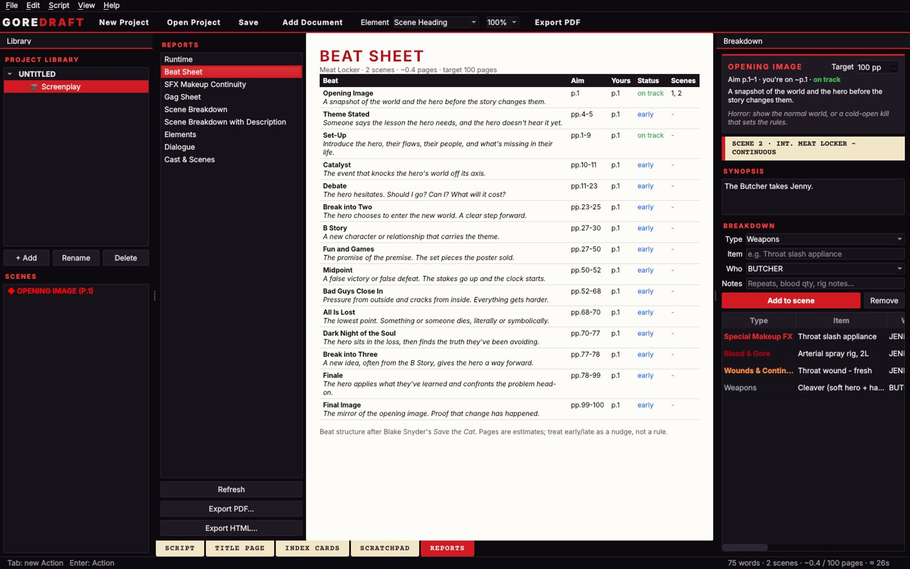
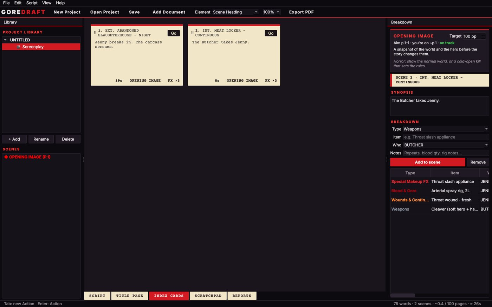

Every screenwriting app knows where your characters stand. GORE DRAFT also knows where the blood pump goes. It was built by a horror filmmaker with 20+ years in practical SFX, for people who make their monsters by hand.

A proper screenplay page, a live Save the Cat beat guide, and a scene-by-scene effects breakdown.
Tab and Enter flow between elements, index cards, scratchpad, title page and reports. Imports Celtx 2, Final Draft and Fountain files.
A pre-filled beat guide with target pages for your length. It tells you when you're running long, with a horror note on every beat.
Reorder from the scene list or the index cards. Breakdowns and synopses travel with their scene.
Live running time, a per-scene timecode report, and word counts for scripts and novels.
Keep the script and the novelisation in one project, with chapters, word count and reading time.
Australian spelling. Knows squibs, prosthetics and animatronics. Leaves character names alone.
Select a line, right-click, and tag it. Special Makeup FX, prosthetics, blood rigs, wounds, creature FX, animatronics, fog & haze, drones and pyro are first in the list, not buried under "Miscellaneous".
SFX Makeup Continuity lists every wound for every character in scene order, so you know how many throat appliances to run before day one.
Gag Sheet is a printable workshop checklist with Built, Tested and On set boxes for every gag.
INT. MEAT LOCKER - CONTINUOUS
Jenny backs into the cold. The cleaver comes out of the dark.
Her throat opens in a hot red spray across the frosted plastic.
THE BUTCHER
Fresh cuts tonight.


We had dozens of horror screenplays written in the old Celtx desktop app, and we wanted to keep editing them offline, on our own machines, without a subscription. So we built GORE DRAFT. It opens those old .celtx projects, brings every scene and every scratchpad back, and saves them as plain files you own. If your old scripts are stuck in a drawer too, bring them.
No account. No cloud. No subscription that turns up after you've paid. Projects are plain Fountain and Markdown files in a folder you choose. If GORE DRAFT disappeared tomorrow, your scripts would still open in Notepad, Highland, or any Fountain app.
GORE DRAFT's code was built with Claude, an AI coding assistant, and we'd rather tell you than have you find out. The app itself contains no AI. It never writes, suggests or analyses your work, it never goes online, and your scripts never leave your computer.
No generated scenes, no "improve my dialogue", no suggestions.
Nothing is uploaded, so nothing can be trained on your work.
Plain text on your own drive. Yours forever.
It's free, and it's early. Here's how to get it running.